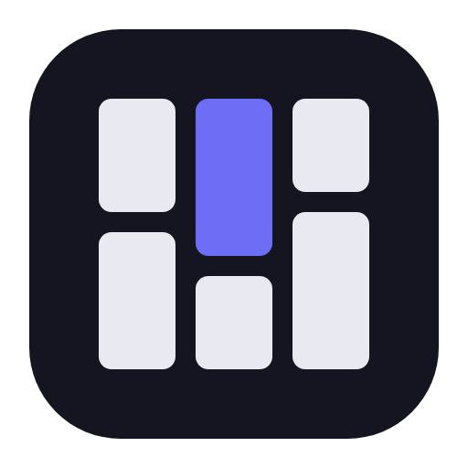

Imports a board
Paste a board, section or pin URL. For private boards, pick the browser you're signed in with and Hoard borrows its cookies, so there's nothing to configure and no password to hand over.

Back up your Pinterest boards locally.
A self-hosted, local-first Pinterest archiver for Windows and macOS. Your boards, the images and their metadata, land in a folder on a disk you own. Browse them in a fast masonry grid, or view them without Hoard in your file explorer.
Hoard isn't a replacement for Pinterest. It keeps a backup of what you've already saved to your boards so you can browse it offline; finding new things to save still happens on Pinterest.
Latest release · free and open source under GPL-3.0 · other downloads
Point it at a board and it fetches the pins, keeps the structure, and stays cheap to run again.
Paste a board, section or pin URL. For private boards, pick the browser you're signed in with and Hoard borrows its cookies, so there's nothing to configure and no password to hand over.
Pinterest sections become nested folders inside the saved board, to any depth, and stay in step as the board changes.
A sync walks the board newest-first and stops as soon as it reaches pins you already have, so picking up three new ones costs a page or two rather than a re-crawl. A full sync is there for the edge cases.
Aim several Pinterest boards at one local board and they gather into the same grid. Each pin remembers where it came from.
Replicate a project to an external drive, a NAS share or a synced folder. After the first pass, only what changed moves. A backup for your backup.
One button writes a browsable Board/Folder/image.jpg copy anywhere you like.
You don't need Hoard to read it, and re-running it is an incremental refresh.
A virtualised masonry grid, live search, an inline detail band and a zoom/pan lightbox. GIFs animate right in the grid, capped so memory stays flat.
There's no account, no server and no telemetry. Hoard only ever fetches what the account you're already signed in as can see, and everything it fetches stays on your machine.
A project is just a folder you choose. Open it in your file manager any time; nothing in there is locked behind the app.
YourFolder/
hoard.project.json # marker: name, id, format
store/ # your images, content-addressed
ops/ # append-only history, per computerops/.
Four steps from a fresh install to a board on your disk.
Name it, choose where the folder goes. That folder is your archive.
＋ → Import board, paste the URL. For secret boards, pick the browser you're signed in with. The Firefox and Chromium families are both detected.
Progress streams into the board card and the grid fills in live as pins land.
＋ → Sync board picks up what's new. Sync all boards does the whole project in turn; one failing board never stops the rest.
The buttons below always download the latest release. For other versions, visit the GitHub releases page.
Installs for your user only, with no admin prompt, and updates itself from inside the app.
Hoard-installer-win-x64.exe
Installer
Portable: unzip and run. There's no installer and it can't update itself, so download over it to update.
Hoard-portable-win-x64.zip
Portable zip
Unzip and drag Hoard.app to Applications. It updates itself from there.
Intel Macs aren't built.
Hoard-portable-osx-arm64.zip
Apple Silicon app
unzip drops
the signature and macOS then calls the app damaged.